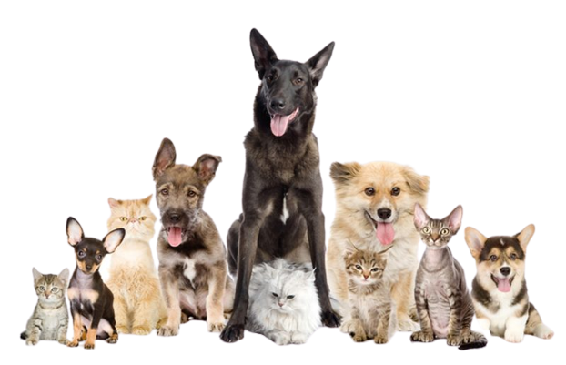

Todo para nuestras mascotas
Aquí podrás encontrar lo neceesario para nuestras mascotas, vídeos, consejos y muchas cosas más. Si buscas todo lo relacionado con nuestras mascotas, estás en el lugar indicado.
Tenemos toda una seccion dedicada a adopciones, si estas buscando un nuevo integrante para tu hogar no dudes en contactarnos.
Estas buscando veterinaria, guarderia, hoteles? Todo eso y más en nuestra sección de servicios
En la prarte de consejos, encontrarás noticias, curiosidades sobre animales y consejos para el cuidado de tu mascota.
